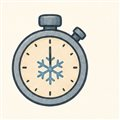

特別編（じっけん棚）── めざめの3秒 かんぜんばんめざめの3秒 — ぜんぶ同時に見る
第3巻07話で、めざめの物語を3枚の絵で見ました。今日はその完全版です。ふだん、始動を語るとき、弁の人は弁を、ポンプの人は回転数を、燃焼の人は室圧を見ています。でも実際のエンジンの朝は、ぜんぶが同時に起きている。下の映画を、指でこすってみてください。
見どころを3つ。①点火の前から、ポンプはタンクの圧だけでそっと回りはじめています（タンクヘッドスタート）。②点火のあとの加速は、誰かが踏むアクセルではなく、回る→流れる→温まる→もっと回るという自励の輪（ブートストラップ）。③主段化の直後、吸込余裕がいちばん苦しい——回転は定格なのに、タンクの加圧がまだ追いついていないからです。
よりみちこの映画の正体（模型の中身）
この波形はリアルタイム計算ではなく、集中定数系の簡約モデルを50Hzで事前に解いた録画です。骨組みは4本だけ——
dN/dt ∝ (Pタービン − Pポンプ)/N
タービン出力は「流量 × ジャケットで拾った熱 × 圧力比の効き」。低回転では膨張比が取れないので弱く、回るほど強くなる——これがS字加速の正体です。ポンプ所要は回転数の3乗。壁温は火の強さを追いかけ、拾える熱を決める。定格では TCV が2〜3割ブリードを絞った状態で、タービンとポンプの力がちょうど釣り合います。定数はすべて教材値です（notes/lab-mezame-plan.md に全式）。
🌀 流体屋のためのノートどこまでが「本物の形」か
本物の形: タンクヘッド自己始動→燃料リッチ点火→ブートストラップ→ガバナ整定という因果の順番。吸込余裕（NPSHa/NPSHr）が「回転の2乗で減り、タンク加圧で戻る」構図。混合比が薄い側から定格へ登る道筋。
省いたもの: 二相流とチャギング、点火遷移の圧力スパイク、弁の水撃、タービン側の温度応力、POGOとの連成。つまり始動を難しくしている当のものたちは、まだこの映画に出演していません。外乱編（冷やし不足・タンク圧低め・点火遅れ）で順に登場予定です。
・G. P. Sutton & O. Biblarz, Rocket Propulsion Elements, 9th ed.（始動遷移の一般論）
・Boeing/Rocketdyne Space Shuttle Main Engine Orientation（実機始動シーケンスの公開記述）
・NASA TM-107318（RL10: エキスパンダサイクルの始動とチルダウン）
・JAXA/MHI 公開論文（LE-5B アイドルモード燃焼——タンクヘッド自己始動の実例）